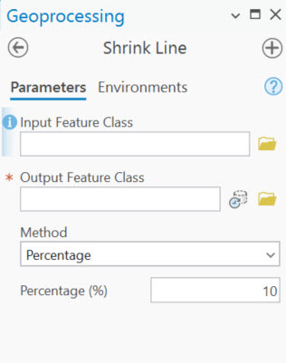
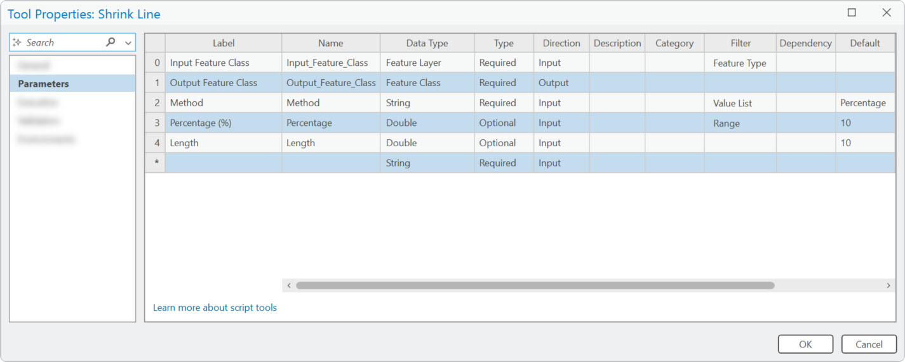
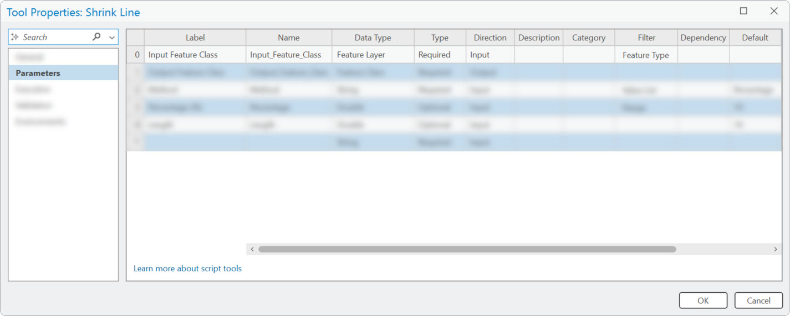
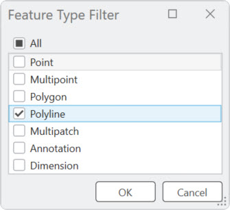
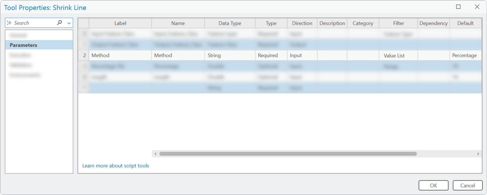
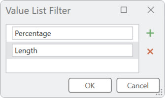
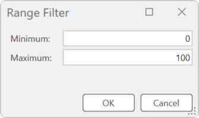

Scan for demo slides
Demo: Shrink Line
Overview of Parameters
 Back to source codeInput Feature Class
The Feature Layer datatype allows users to pick a layer from the map using the drop-down arrow.
Feature Type Filter
Limit features to lines only.
Output Feature Class
Method
Value List Filter
Percentage (%)
Range Filter
Limit the parameter to a numerical range.
Length
Source Code
import arcpy
import os
# Initialize parameters
in_fc = arcpy.GetParameter(0)
out_fc = arcpy.GetParameterAsText(1)
method = arcpy.GetParameter(2)
percentage = arcpy.GetParameter(3)/100
length = arcpy.GetParameter(4)
# Create output fc
out_ws, out_name = os.path.split(out_fc)
arcpy.management.CreateFeatureclass(
out_ws, out_name, template=in_fc,
spatial_reference=arcpy.Describe(in_fc).SpatialReference
)
Source Code
# Open insert cursor for output fc
with arcpy.da.InsertCursor(out_fc) as in_cursor:
# Open search cursor for input fc
with arcpy.da.SearchCursor(in_fc, ['SHAPE@']) as cursor:
# Go through rows in input fc
for row in cursor:
if row[0] is not None:
# Get length of line
line_len = row[0].length
# If user selected "Percentage"
if method == "Percentage":
# Exit loop if user provided a value of 0
if percentage == 0.0:
arcpy.AddWarning('Percentage was not provided'
' or value was 0. Output feature'
' class may be empty.')
break
else:
# Calculate shrink value
shrink = percentage * line_len * 0.5
# Get segment of line using percentage
# The segment is now the new shortened line
segment = row[0].segmentAlongLine(shrink, line_len - shrink)
# Insert the new line into the output fc
in_cursor.insertRow([segment])
# If user did not select "Percentage"
else:
# Get segment of line using distance
if length != '' and length != 0.0:
shrink = float(length) * 0.5
segment = row[0].segmentAlongLine(shrink, line_len - shrink)
# Insert new line into the output fc
in_cursor.insertRow([segment])
# Exit loop if user provided a value of 0 or no value was provided
else:
arcpy.AddWarning('Length was not provided'
' or value was 0. Output feature'
' class may be empty.')
break
Validation Code
class ToolValidator:
# Class to add custom behavior and properties to the tool and tool parameters.
def __init__(self):
# set self.params for use in other function
self.params = arcpy.GetParameterInfo()
def initializeParameters(self):
# Customize parameter properties.
# This gets called when the tool is opened.
return
def updateParameters(self):
# Modify parameter values and properties.
# This gets called each time a parameter is modified, before
# standard validation.
# Enable parameter when user selects it
if self.params[2].value == "Percentage":
self.params[4].enabled = False
self.params[3].enabled = True
elif self.params[2].value == "Length":
self.params[3].enabled = False
self.params[4].enabled = True
return
def updateMessages(self):
# Customize messages for the parameters.
# This gets called after standard validation.
# Prevents user from entering negative value for length
if isinstance(self.params[4].value, float):
if self.params[4].value < 0:
self.params[4].setErrorMessage('value cannot be negative')
return
# def isLicensed(self):
# # set tool isLicensed.
# return True
# def postExecute(self):
# # This method takes place after outputs are processed and
# # added to the display.
# return
Demo: creating a Geoprocessing sample
Guide for Geoprocessing samples